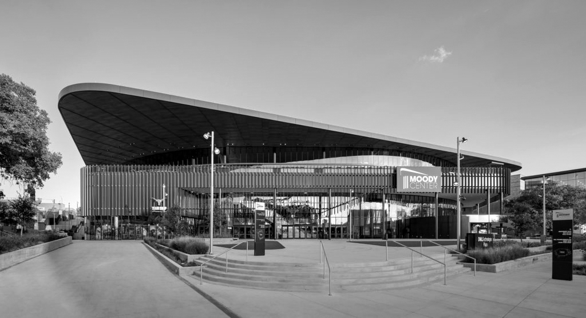

Rigging is a critical component of the entertainment industry, providing the support and structure needed to bring events to life. Riggers are responsible for the design, installation, and maintenance of rigging systems that support lighting, sound, and other equipment used in productions. It’s a complex and demanding field that requires a combination of technical expertise and creative problem-solving skills. The Moody Center in Austin, Texas is a premier performing arts venue that hosts concerts, theater productions, and other events. It boasts cutting-edge technology and facilities, making it a dynamic and exciting place to work for riggers.
Despite the challenges, the rewards of working as a rigger are numerous. Rigging is a dynamic and exciting field that offers opportunities for growth, creativity, and fulfillment. The Moody Center in Austin provides riggers with challenging projects and state-of-the-art facilities, allowing them to make a significant impact on the entertainment industry.